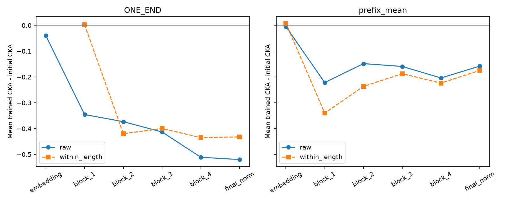

这是观察到表征位置差异后追加的事后诊断。24 个源模型、3 个初始化、全部 6 个层级位置均报告。8 个组的种子 17 模型另做真实答案损失的激活梯度检查；没有更新模型，也没有使用目标任务标签。

| 层 | 位置 | 中心化 | 初始化 CKA | 训练后 CKA | 上升 |
|---|---|---|---|---|---|
| embedding | ONE_END | raw | 0.922 | 0.882 | 7/24 |
| embedding | ONE_END | within_length | 未定义（零方差） | 未定义（零方差） | 0/0 |
| embedding | prefix_mean | raw | 0.992 | 0.987 | 9/24 |
| embedding | prefix_mean | within_length | 0.134 | 0.142 | 14/24 |
| block_1 | ONE_END | raw | 0.849 | 0.504 | 1/24 |
| block_1 | ONE_END | within_length | 0.130 | 0.133 | 9/24 |
| block_1 | prefix_mean | raw | 0.874 | 0.653 | 3/24 |
| block_1 | prefix_mean | within_length | 0.738 | 0.399 | 0/24 |
| block_2 | ONE_END | raw | 0.825 | 0.452 | 1/24 |
| block_2 | ONE_END | within_length | 0.621 | 0.202 | 0/24 |
| block_2 | prefix_mean | raw | 0.796 | 0.648 | 5/24 |
| block_2 | prefix_mean | within_length | 0.674 | 0.438 | 2/24 |
| block_3 | ONE_END | raw | 0.809 | 0.396 | 0/24 |
| block_3 | ONE_END | within_length | 0.608 | 0.208 | 0/24 |
| block_3 | prefix_mean | raw | 0.775 | 0.615 | 6/24 |
| block_3 | prefix_mean | within_length | 0.636 | 0.449 | 6/24 |
| block_4 | ONE_END | raw | 0.806 | 0.295 | 0/24 |
| block_4 | ONE_END | within_length | 0.576 | 0.141 | 0/24 |
| block_4 | prefix_mean | raw | 0.758 | 0.554 | 4/24 |
| block_4 | prefix_mean | within_length | 0.600 | 0.376 | 3/24 |
| final_norm | ONE_END | raw | 0.804 | 0.284 | 0/24 |
| final_norm | ONE_END | within_length | 0.572 | 0.140 | 0/24 |
| final_norm | prefix_mean | raw | 0.759 | 0.601 | 7/24 |
| final_norm | prefix_mean | within_length | 0.596 | 0.422 | 5/24 |
| 组 | 层 | 位置 | 梯度 L2 | 非零坐标 |
|---|---|---|---|---|
| cycle_none | block_1 | prefix_all | 0.00492 | 393216 |
| cycle_none | block_1 | ONE_END | 0.00108 | 16384 |
| cycle_none | block_1 | task_token | 0.00111 | 16384 |
| cycle_none | block_1 | equals_query | 0.00528 | 16384 |
| cycle_none | block_2 | prefix_all | 0.00394 | 393216 |
| cycle_none | block_2 | ONE_END | 0.00106 | 16384 |
| cycle_none | block_2 | task_token | 0.000807 | 16384 |
| cycle_none | block_2 | equals_query | 0.00521 | 16384 |
| cycle_none | block_3 | prefix_all | 0.00222 | 393216 |
| cycle_none | block_3 | ONE_END | 0.000951 | 16384 |
| cycle_none | block_3 | task_token | 0.000294 | 16384 |
| cycle_none | block_3 | equals_query | 0.00509 | 16384 |
| cycle_none | block_4 | prefix_all | 0 | 0 |
| cycle_none | block_4 | ONE_END | 0 | 0 |
| cycle_none | block_4 | task_token | 0 | 0 |
| cycle_none | block_4 | equals_query | 0.00563 | 16384 |
| cycle_none | final_norm | prefix_all | 0 | 0 |
| cycle_none | final_norm | ONE_END | 0 | 0 |
| cycle_none | final_norm | task_token | 0 | 0 |
| cycle_none | final_norm | equals_query | 0.039 | 16384 |
| cycle_three | block_1 | prefix_all | 0.00205 | 393216 |
| cycle_three | block_1 | ONE_END | 0.000681 | 16384 |
| cycle_three | block_1 | task_token | 0.00103 | 16384 |
| cycle_three | block_1 | equals_query | 0.00487 | 16384 |
| cycle_three | block_2 | prefix_all | 0.0017 | 393216 |
| cycle_three | block_2 | ONE_END | 0.000671 | 16384 |
| cycle_three | block_2 | task_token | 0.000838 | 16384 |
| cycle_three | block_2 | equals_query | 0.00486 | 16384 |
| cycle_three | block_3 | prefix_all | 0.00118 | 393216 |
| cycle_three | block_3 | ONE_END | 0.000552 | 16384 |
| cycle_three | block_3 | task_token | 0.000599 | 16384 |
| cycle_three | block_3 | equals_query | 0.00505 | 16384 |
| cycle_three | block_4 | prefix_all | 0 | 0 |
| cycle_three | block_4 | ONE_END | 0 | 0 |
| cycle_three | block_4 | task_token | 0 | 0 |
| cycle_three | block_4 | equals_query | 0.00539 | 16384 |
| cycle_three | final_norm | prefix_all | 0 | 0 |
| cycle_three | final_norm | ONE_END | 0 | 0 |
| cycle_three | final_norm | task_token | 0 | 0 |
| cycle_three | final_norm | equals_query | 0.0358 | 16384 |
| cycle_four | block_1 | prefix_all | 0.00141 | 393216 |
| cycle_four | block_1 | ONE_END | 9.86e-05 | 16384 |
| cycle_four | block_1 | task_token | 0.000306 | 16384 |
| cycle_four | block_1 | equals_query | 0.00329 | 16384 |
| cycle_four | block_2 | prefix_all | 0.000849 | 393216 |
| cycle_four | block_2 | ONE_END | 5.1e-05 | 16384 |
| cycle_four | block_2 | task_token | 0.000135 | 16384 |
| cycle_four | block_2 | equals_query | 0.00335 | 16384 |
| cycle_four | block_3 | prefix_all | 0.000535 | 393216 |
| cycle_four | block_3 | ONE_END | 3.6e-05 | 16384 |
| cycle_four | block_3 | task_token | 9.68e-05 | 16384 |
| cycle_four | block_3 | equals_query | 0.00348 | 16384 |
| cycle_four | block_4 | prefix_all | 0 | 0 |
| cycle_four | block_4 | ONE_END | 0 | 0 |
| cycle_four | block_4 | task_token | 0 | 0 |
| cycle_four | block_4 | equals_query | 0.0036 | 16384 |
| cycle_four | final_norm | prefix_all | 0 | 0 |
| cycle_four | final_norm | ONE_END | 0 | 0 |
| cycle_four | final_norm | task_token | 0 | 0 |
| cycle_four | final_norm | equals_query | 0.0445 | 16384 |
| interior_none | block_1 | prefix_all | 0.0537 | 393216 |
| interior_none | block_1 | ONE_END | 0.0138 | 16384 |
| interior_none | block_1 | task_token | 0.00517 | 16384 |
| interior_none | block_1 | equals_query | 0.0196 | 16384 |
| interior_none | block_2 | prefix_all | 0.0283 | 393216 |
| interior_none | block_2 | ONE_END | 0.015 | 16384 |
| interior_none | block_2 | task_token | 0.00187 | 16384 |
| interior_none | block_2 | equals_query | 0.0164 | 16384 |
| interior_none | block_3 | prefix_all | 0.0091 | 393216 |
| interior_none | block_3 | ONE_END | 0.00244 | 16384 |
| interior_none | block_3 | task_token | 0.000844 | 16384 |
| interior_none | block_3 | equals_query | 0.0108 | 16384 |
| interior_none | block_4 | prefix_all | 0 | 0 |
| interior_none | block_4 | ONE_END | 0 | 0 |
| interior_none | block_4 | task_token | 0 | 0 |
| interior_none | block_4 | equals_query | 0.00445 | 16384 |
| interior_none | final_norm | prefix_all | 0 | 0 |
| interior_none | final_norm | ONE_END | 0 | 0 |
| interior_none | final_norm | task_token | 0 | 0 |
| interior_none | final_norm | equals_query | 0.0152 | 16384 |
| interior_four | block_1 | prefix_all | 0.0175 | 393216 |
| interior_four | block_1 | ONE_END | 0.00541 | 16384 |
| interior_four | block_1 | task_token | 0.0109 | 16384 |
| interior_four | block_1 | equals_query | 0.0131 | 16384 |
| interior_four | block_2 | prefix_all | 0.0109 | 393216 |
| interior_four | block_2 | ONE_END | 0.00327 | 16384 |
| interior_four | block_2 | task_token | 0.00816 | 16384 |
| interior_four | block_2 | equals_query | 0.0131 | 16384 |
| interior_four | block_3 | prefix_all | 0.00718 | 393216 |
| interior_four | block_3 | ONE_END | 0.00249 | 16384 |
| interior_four | block_3 | task_token | 0.00683 | 16384 |
| interior_four | block_3 | equals_query | 0.0118 | 16384 |
| interior_four | block_4 | prefix_all | 0 | 0 |
| interior_four | block_4 | ONE_END | 0 | 0 |
| interior_four | block_4 | task_token | 0 | 0 |
| interior_four | block_4 | equals_query | 0.00473 | 16384 |
| interior_four | final_norm | prefix_all | 0 | 0 |
| interior_four | final_norm | ONE_END | 0 | 0 |
| interior_four | final_norm | task_token | 0 | 0 |
| interior_four | final_norm | equals_query | 0.0243 | 16384 |
| position_none | block_1 | prefix_all | 0.0182 | 393216 |
| position_none | block_1 | ONE_END | 0.00174 | 16384 |
| position_none | block_1 | task_token | 0.00548 | 16384 |
| position_none | block_1 | equals_query | 0.0147 | 16384 |
| position_none | block_2 | prefix_all | 0.0129 | 393216 |
| position_none | block_2 | ONE_END | 0.00151 | 16384 |
| position_none | block_2 | task_token | 0.00466 | 16384 |
| position_none | block_2 | equals_query | 0.0135 | 16384 |
| position_none | block_3 | prefix_all | 0.00621 | 393216 |
| position_none | block_3 | ONE_END | 0.00088 | 16384 |
| position_none | block_3 | task_token | 0.0018 | 16384 |
| position_none | block_3 | equals_query | 0.00775 | 16384 |
| position_none | block_4 | prefix_all | 0 | 0 |
| position_none | block_4 | ONE_END | 0 | 0 |
| position_none | block_4 | task_token | 0 | 0 |
| position_none | block_4 | equals_query | 0.00422 | 16384 |
| position_none | final_norm | prefix_all | 0 | 0 |
| position_none | final_norm | ONE_END | 0 | 0 |
| position_none | final_norm | task_token | 0 | 0 |
| position_none | final_norm | equals_query | 0.0205 | 16384 |
| position_three | block_1 | prefix_all | 0.000387 | 393216 |
| position_three | block_1 | ONE_END | 1.3e-05 | 16384 |
| position_three | block_1 | task_token | 3.07e-05 | 16384 |
| position_three | block_1 | equals_query | 0.000365 | 16384 |
| position_three | block_2 | prefix_all | 0.000274 | 393216 |
| position_three | block_2 | ONE_END | 2.5e-06 | 16384 |
| position_three | block_2 | task_token | 2.93e-06 | 16384 |
| position_three | block_2 | equals_query | 0.000347 | 16384 |
| position_three | block_3 | prefix_all | 0.000126 | 393216 |
| position_three | block_3 | ONE_END | 2.14e-06 | 16384 |
| position_three | block_3 | task_token | 8.36e-07 | 16384 |
| position_three | block_3 | equals_query | 0.000225 | 16384 |
| position_three | block_4 | prefix_all | 0 | 0 |
| position_three | block_4 | ONE_END | 0 | 0 |
| position_three | block_4 | task_token | 0 | 0 |
| position_three | block_4 | equals_query | 2.87e-05 | 16384 |
| position_three | final_norm | prefix_all | 0 | 0 |
| position_three | final_norm | ONE_END | 0 | 0 |
| position_three | final_norm | task_token | 0 | 0 |
| position_three | final_norm | equals_query | 5.54e-05 | 16384 |
| position_four | block_1 | prefix_all | 0.00226 | 393216 |
| position_four | block_1 | ONE_END | 0.0017 | 16384 |
| position_four | block_1 | task_token | 0.000955 | 16384 |
| position_four | block_1 | equals_query | 0.00323 | 16384 |
| position_four | block_2 | prefix_all | 0.00117 | 393216 |
| position_four | block_2 | ONE_END | 0.000524 | 16384 |
| position_four | block_2 | task_token | 0.000625 | 16384 |
| position_four | block_2 | equals_query | 0.00253 | 16384 |
| position_four | block_3 | prefix_all | 0.000761 | 393216 |
| position_four | block_3 | ONE_END | 0.000333 | 16384 |
| position_four | block_3 | task_token | 0.000305 | 16384 |
| position_four | block_3 | equals_query | 0.00253 | 16384 |
| position_four | block_4 | prefix_all | 0 | 0 |
| position_four | block_4 | ONE_END | 0 | 0 |
| position_four | block_4 | task_token | 0 | 0 |
| position_four | block_4 | equals_query | 0.0025 | 16384 |
| position_four | final_norm | prefix_all | 0 | 0 |
| position_four | final_norm | ONE_END | 0 | 0 |
| position_four | final_norm | task_token | 0 | 0 |
| position_four | final_norm | equals_query | 0.0258 | 16384 |
同长度去均值后，初始化 ONE_END 只由长度确定，残差理论上为零，CKA 会受浮点舍入支配；该初始化层的条件 CKA 不应作科学解释。后续层的结果均原样保留。